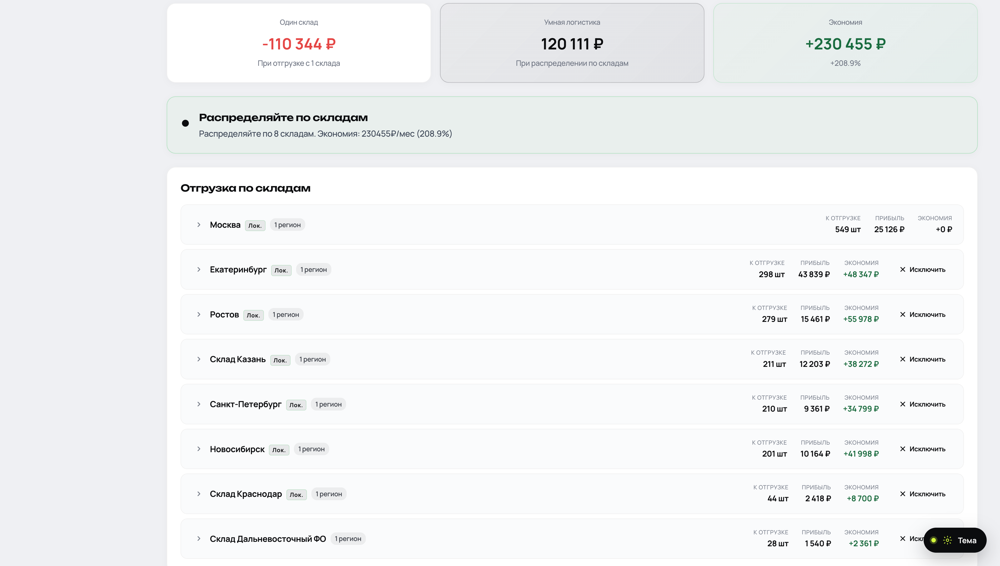
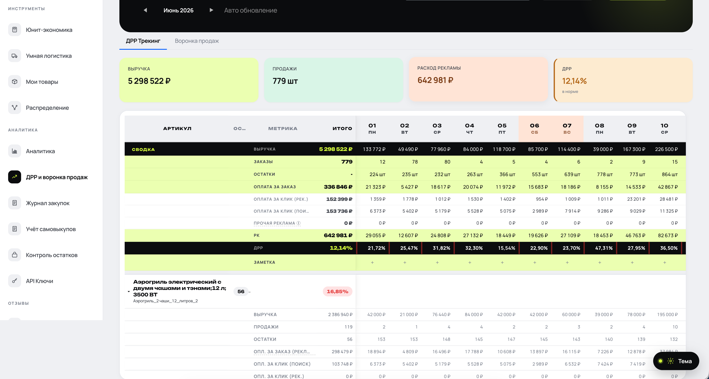
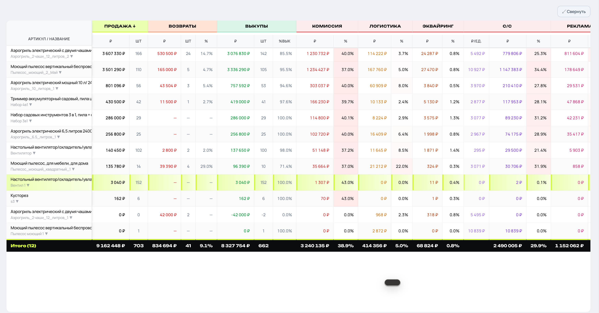

Селлер вводит цену товара в стандартный калькулятор, видит комиссию Ozon, минусует · получает «маржу». Но в реальности есть ещё 12–15 статей расходов: логистика по кластерам, возвраты, баллы, эквайринг, упаковка, хранение, утилизация. Каждая ест по 1–3%. В сумме · 15–25% от заявленной маржи.
Селлер живёт в иллюзии прибыли. Через год удивляется, почему оборот растёт, а денег на счёте · нет.



Сейчас Ozon-юнит работает в продакшене. Несколько сотен активных селлеров считают через него каждый день. Тариф от 1 190 ₽ в месяц, есть бесплатный пробный период. Это тихий доходный канал, который я веду параллельно с Micmiky.
Селлеры маркетплейсов · это огромный рынок (полтора миллиона активных в РФ), но 90% из них считают экономику на коленке. Я строил Ozon-юнит не для «технологического прорыва», а чтобы дать конкретный инструмент, который убирает иллюзию прибыли. Это и есть мой подход к ИИ · не «трансформация бизнеса», а решение одной конкретной задачи.
Бесплатный пробный период. Подключение за минуту через Ozon Seller API.
Открыть ozon-calculator.ru